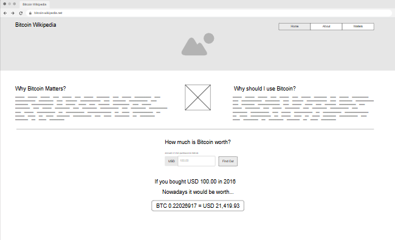
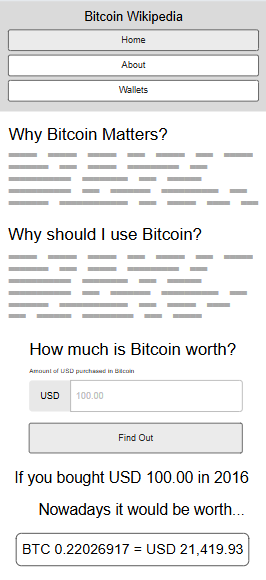

Site Name
Bitcoin Wikipedia
The name was chosen because it emphasizes a focus on individuals who are curious to learn more about Bitcoin. The site aims to serve as a resource similar to Wikipedia for those seeking knowledge about the cryptocurrency.
Optional Available Domain: bitcoin-wikipedia.net
Site Purpose
The main purpose of this site is to provide valuable and accessible information about Bitcoin and its significance. It aims to help people understand the potential impact of Bitcoin and explore how much they could have gained if they had invested in it.
Scenarios
- What is Bitcoin?
- Is it worth investing in Bitcoin?
- What if I had invested $100 in Bitcoin?
- Why should I use Bitcoin?
- How do I buy and store my bitcoins?
Color Schema
#f7931a
#0d579b
#70c776
#fdfdfd
#232323
Typography
Ubuntu
Inter
Wireframe
Home Page (Desktop View)
Home Page (Mobile View)
